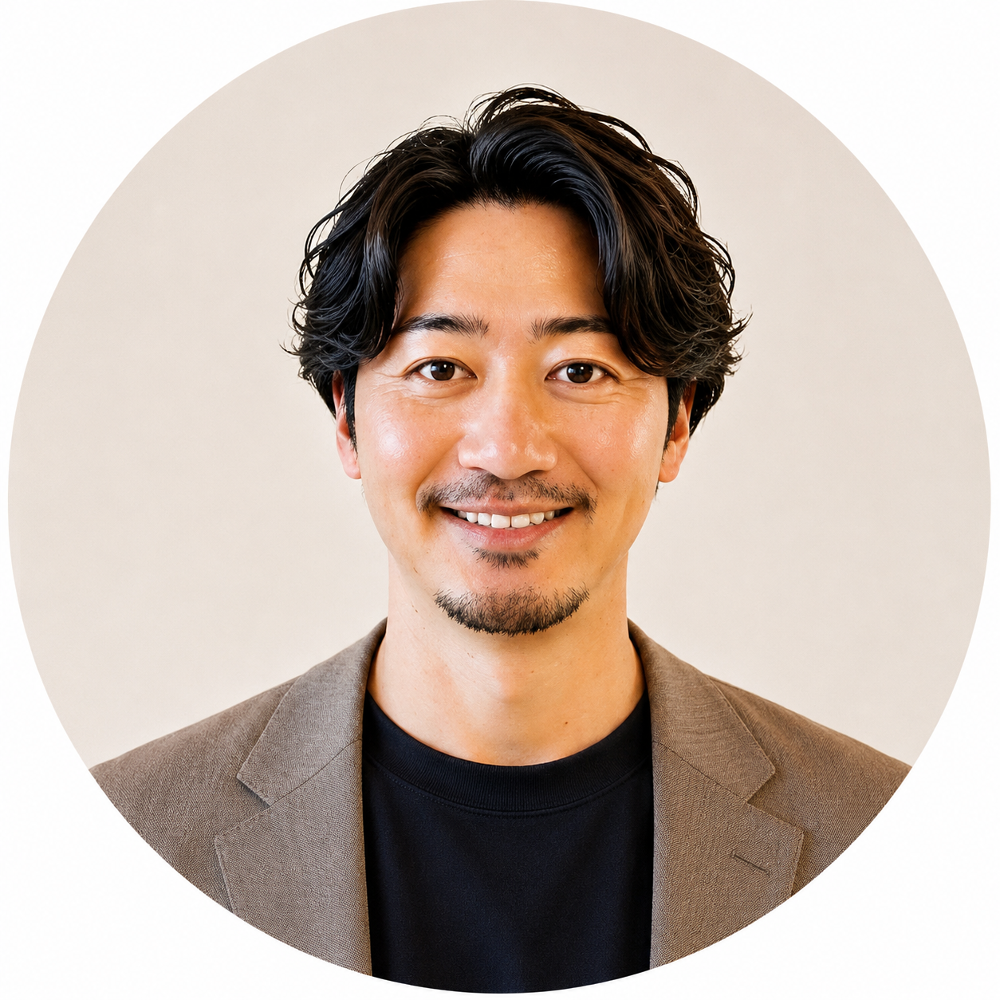

大阪・梅田を拠点に、2つの会社を経営しています。人材・採用支援の現場で経験を積み、ブランディングの世界へ。今は「対話で組織の内側に入り、実装まで自分たちの手でやり切る」伴走を軸にしています。
レポートを出して終わりではなく、町医者のように寄り添い、実行までやり切る——という伴走の思想をまとめました。この考え方が、2社すべての土台になっています。
AXとは、AIを使って会社の戦い方そのものをつくり直すこと。DXが「仕事のやり方」をデジタルに変えることなら、AXは「会社の戦い方」を変えることだと考えています。
やることは創業時から一つです。組織を変える（インナー）→ 魅せ方を変える（アウター）→ 戦い方を変える（事業）。この順番で会社を変え、そのすべてにAIを通します。私たちはデザイン会社でもDX会社でもコンサル会社でもありません。本丸は、経営者の隣に立ち、組織の中から会社を変えること。デザインもDXもAIも、そのための手段です。
私たちの会社では、まったくのゼロから一般社員がAIで業務アプリを作れるようになりました。同じやり方を、御社の現場に合わせた研修としてお渡しします。研修して終わりではなく、自社の業務が回り出すまで設計します。
人材開発支援助成金（事業展開等リスキリング支援コース）の活用で、中小企業なら経費助成 最大75％＋賃金助成。標準コースの実質負担は約10〜25万円が目安です。
デザイン・制作の支援から始まり、組織開発、そしてAI実装へ。関わり方を広げながら、複数の企業で「会社の変わり方」そのものを伴走してきました。（下記は匿名化した代表例。社名・数字の掲載可否はご相談ください）
この会社は、バレンサーの現場から生まれました。ブランディングの支援を続けるなかで、後継者の不在や、M&Aで会社の文化・想いが失われていく場面に、何度も向き合ってきたからです。
数字だけでなく、社長の想いや社風、歴史ごと次の世代へつなぐ。「売る」ことをゴールにせず、「売れる状態」を磨き上げてから次へ進む、伴走型の支援です。
2社で、会社を強くするところから、次の世代へつなぐところまでを、ひとつながりで支えています。組織開発・ブランディングの知見を、そのまま事業承継・M&Aに活かせるのが、他にない組み合わせです。
どちらの会社が合いそうか、下の目安をご参考にしていただけますと幸いです。まずは一度、お話をうかがうところから始めます。
ご自身のご相談でも、お知り合いのご紹介でも構いません。下記からお気軽にお寄せください。いただいた内容を確認し、1〜2営業日でご返信します。